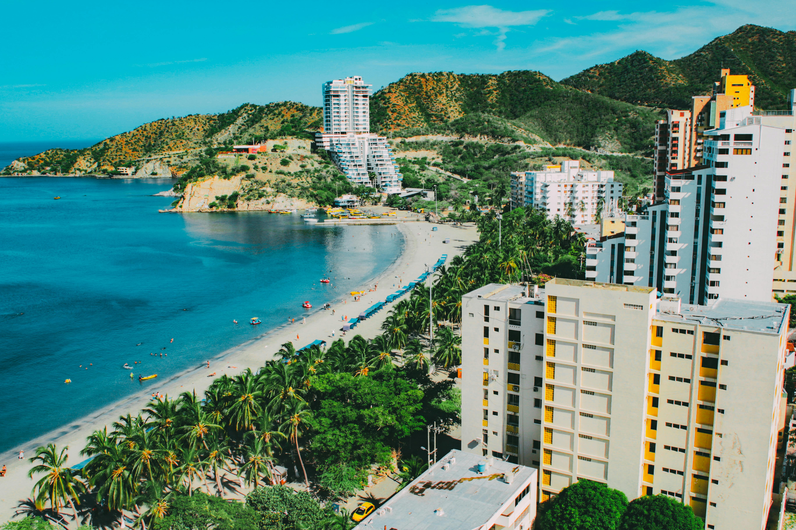

Pays Producteurs de Café

Brésil
Le Brésil est le plus grand producteur de café au monde. Voici quelques informations clés :
- Production annuelle : 3,558 millions de tonnes (2023)
- Principales régions de production : Minas Gerais, São Paulo, Bahia
- Types de café : Arabica, Robusta

Vietnam
Le Vietnam est le deuxième plus grand producteur de café. Voici quelques informations clés :
- Production annuelle : 1,815 millions de tonnes (2023)
- Principales régions de production : Tây Nguyên, Lâm Đồng, Đắk Lắk
- Types de café : Robusta

Retour à l'accueil
Colombie
La Colombie est célèbre pour son café arabica de haute qualité. Voici quelques informations clés :
- Production annuelle : 810 000 tonnes (2023)
- Principales régions de production : Huila, Antioquia, Tolima
- Types de café : Arabica